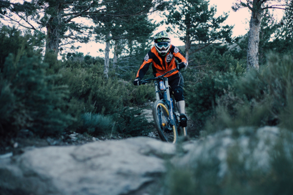
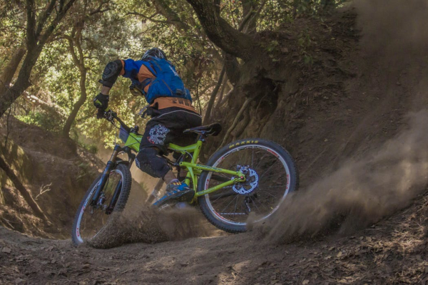
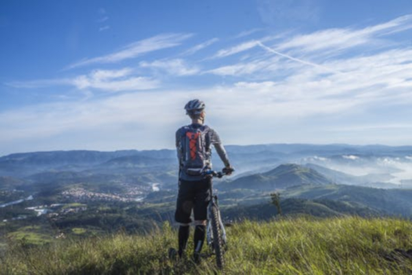

CHOOSE YOUR NEXT ADVENTURE
ROCKY MOUNTAINS

DIFFICULTY: Expert
LENGTH: 10 Miles
COST: $50/person
LOCATION: North of Bozeman Mountain
Want some extreme mountain biking? The Rocky Mountain is a great deal for you. Join us as we take you at the top of the mountain and witness the beautiful scenery of Bozeman and some nearby towns, and enjoy the thrilling trail as we go down the mountain.
DOWN HILL SANDY DUSTY DRIFT

Difficulty: Professional
LENGTH: 7 Miles
COST: $39/person
LOCATION: South of Bozeman hill
Tired drifiting with your car? Why not try drifiting with your bike? Join us as we take you to the top of the hill and enjoy the view of the forest. Then enjoy yourself as we drift down the hill with a heart pumping experience that will give you some adrenaline.
NATURE RIDE

DIFFICULTY: Novice
LENGTH: 4 Miles
COST: $25/person
LOCATION: Bozeman Hill Trails
In this tour we welcome everyone who loves the nature. Here we help someone who is new in biking. We have some professional bikers who will guide you conquer the trail and gain more experience while enjoying the view of nature.